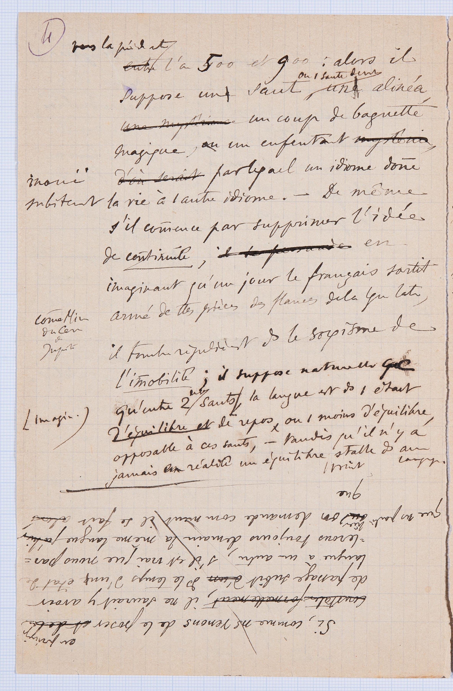
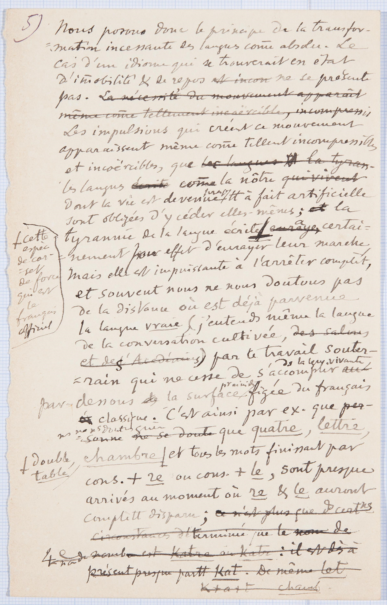
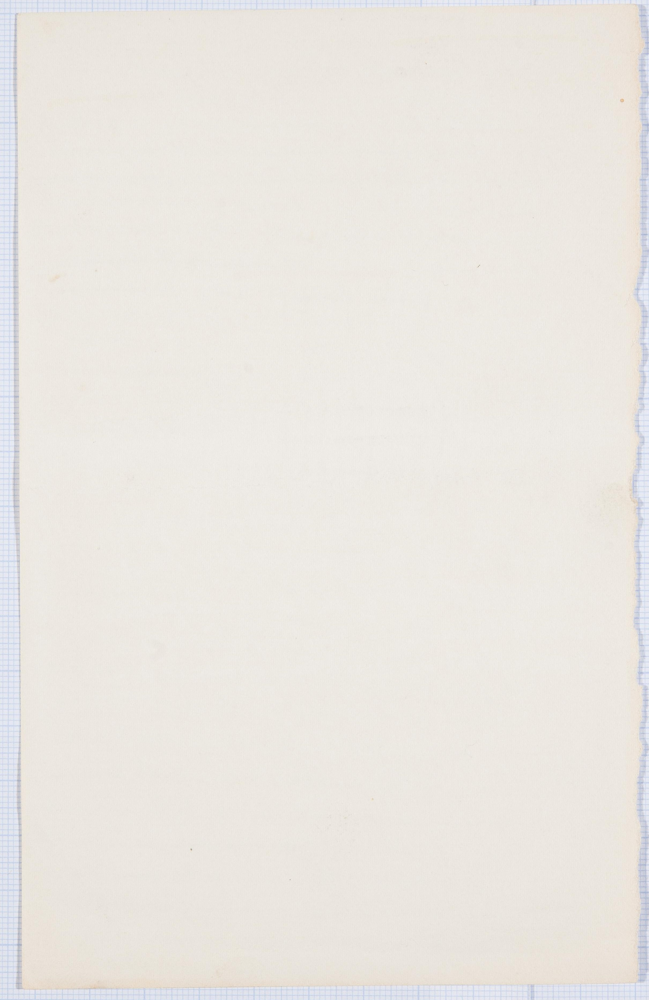

Il titolo originale del manoscritto è
Trois premières conférences à l'Universitè (cours d'ouverture, novembre 1891).
L'autore del documento è
Ferdinand De Saussure.
Il manoscritto si trova attualmente presso la Biblioteca di Ginevra,
in Svizzera, nella collezione degli Archivi Ferdinand de Saussure.
Il codice di inventario del manoscritto è 3951/1.
Descrizione fisica
Il documento è composto da fogli di carta a quadretti, a righe e bianchi ,
precisamente di 30 + 15 + 22 pagine, ovvero 67 pagine, + 1 foglietto.
La maggior parte delle pagine sono numerate con numerazione araba in alto a destra
o sinistra. Il manoscritto è ben conservato nonostante delle macchie di inchiostro e del tempo
su alcune pagine.
Scritto in corsivo, con aggiunte, cancellature e sottolineature.
Origine
Questi appunti sono stati scritti durante le prime tre lezioni del corso di fonetica
greca e latina, primo corso tenuto da
Saussure all'Università di Ginevra nell'anno accademico
1891-1892. Le conferenze si sono svolte da venerdì 6 novembre 1891
a martedì 10 novembre 1891. Probabilmente la terza conferenza si è tenuta venerdì 13 o
martedì 17 novembre 1891.
Pagina 4

4
vers la période entre entrel'an 5400 et 9800: alors il
suppose une un saut:
ou 1 (un) saut
devant d'uneun alinéa
,
une mystérieuse un coup de baguette
magique,ou un enfantement
mystéria inouï d'où serait
par lequel un idiome don¯e (donne) subitement la vie à 1 (un) autre idiome.
- De même
s'il commence par supprimer l'idée
de continuité,
en
imaginant qu'un jour le français sortit
com¯e ( comme )
Min (Minerve)
du cerv (cerveau)
de
Jupiter
armé de ttes (toutes) pièces des flancs de la langue latine,
il tombe régulièrement ds (dans ) le
sopismesophisme de
l'im¯obilité (immobilité ); il suppose naturelle (naturellement)
qu'entre 2 (deux)de ses sauts imagin. (imaginaires ) la langue est
ds (dans )
1 (un) état
d'équilibre et de repos, ou
1 (au) moins
d'équilibre
opposable à ces sauts,-
tandis qu'il n'y a
jamais en réalite un équilibre, un point permanent
, stable ds (dans ) aucun
langage.
Questa pericope si trova in posizione ruotata di 180°. Si tratta della prima redazione
dell'incipit, poi abbandonata.
Si, comme ns (nous) venons
de le poser en principe et de la
constater formellement, il ne saurait y avoir
de passage subit d'un ds (dans )
le temps d'uneun
état de
langue à un autre, s'il est vrai que nous par=
=lerons toujours demain la même langue qu'hier
ou que ns (nous )parlions hier, on demande comment il se fait alors
que
nel periodo tra l'anno 500 e il 900: allora suppone un salto: o un salto dopo un a
capo, un colpo di bacchetta magica,
o un parto inaudito, con il quale un idioma dà d'un tratto la vita a un altro idioma.
Ugualmente, se egli inizia col sopprimere l'idea di continuità, immaginando che un
giorno il francese sia uscito fuori
come Minerva dal cervello di Giove provvisto di tutte le armi della lingua latina,
cade regolarmente nel sofisma dell'immobilità;
suppone naturalmente che, tra due dei suoi immaginari salti, la lingua è in uno stato
di equilibrio e di riposo, o quantomeno di
equilibrio opponibile a questi salti, mentre invece non c'è mai in realtà un equilibrio,
un punto fisso, stabile in nessun linguaggio.
Pagina 5


5
Nous posons donc le principe de la transfor-
=mation incessante des languescom¯e (comme)
absolu.
Le
cas d'un idiome qui se trouverait en état
d'im¯obilité (immobilité )& (et) de repos
est incon ne se présente
pas.
La nécessité du mouvement apparaît même com¯e (comme)
tellement incoërcible (incoercible), incompressi,
Les impulsions qui créent ce mouvement
apparaissent même com¯e (comme)tellement incompressibles
et incoërcible (incoercible),
que les langues la tyran-
les langues écritecom¯e (comme)
la nôtre qui vivent
dont la vie est devenue presquett (tout) à fait artificielle
sont obligées d'y céder elles-mêmes;
et la
tyrannie de la langue écrite
cette
espèce
de cor-
-set
de force
qui est
le
français
officiel (,)enraye,a certai=
=nement pour leur effect d'enrayer leur marche,
mais elle est impuissante à l'arrêter complèt (complètement),
et souvent nous ne nous doutons pas
de la distance où est déjà parvenue
la langue vraie, ( )
(j'entends même la langue
de la conversation cultivée, ( )des salons
et des l' Académies
)par le travail souter-
=rain qui ne cesse de s'accomplir ds (dans )
la langue vivante , ( )au-
par-dessous de la surface pour ainsi dire figée du français
classique.
C’est ainsi par ex. (exemple) que
per-
=sonne que se doutens (nous)
ne ns (nous) doutons guère que quatre,
lettre,
chambre ,
double,
table
et tous les mots finissant par
cons. (consonne)
+ re ou cons. (consonne)+le, ( ) sont presque
arrivés au moment où re& (et) le auront
complètt (complètement) disparu;
ce n'est plus que ds (dans )
certns (certains )
circonstances déterminé que le nom de
4e (quatrième)
nom de
nombre est katre où katr: il est dès à
présent presque partt (partout)
kat. De même let
k+a+t chamb
Poniamo dunque il principio della trasformazione incessante delle lingue come assoluto.
Il caso di un idioma che si trovi in stato d'immobilità e di riposo non si presenta.
Gli impulsi che creano questo movimento appaiono anzi a tal punto incomprimibili e
incoercibili che le lingue come la nostra, la cui vita
è divenuta quasi del tutto artificiale, sono obbligate a cedervi;
la tirannia della lingua scritta, questa specie di bustino rigido che è il francese
ufficiale, ha certamente per effetto di ostacolare il
loro cammino, ma è impotente a fermarlo del tutto, e spesso non ci poniamo alcun dubbio
sulla distanza cui è già pervenuta la lingua vera
(e intendo anche la lingua della conversazione colta) grazie al lavorio sotterraneo
che non cessa di compiersi nella lingua vivente sotto
la superficie per così dire cristallizzata del francese classico.
È così, per esempio, che noi non dubitiamo affatto che quatre, lettre, double, table
e tutte le parole che finiscono con consonante + re o
consonante + le sono quasi giunte al punto in cui re e le saranno completamente spariti.
( ) = Espansioni e regolarizzazioni dei trascrittori/codificatori
Aggiunte
Sostituzioni
Esempi linguistici
chambre
double
lettre
quatre
table
Antroponimi
Jupiter :
Giove è il dio supremo (cioè il re di tutti gli dèi) della religione romana e italica,
i cui simboli sono il
fulmine e il tuono.
Minerve :
Minerva è la divinità romana della lealtà in lotta, delle virtù eroiche, della guerra
giusta, della saggezza,
delle strategie, ed è riconosciuta anche protettrice degli artigiani.
Date o eventi databili
l'an 500 et 900
Glottonimi
latine :
Il latino o lingua latina è una lingua indoeuropea appartenente al gruppo delle lingue
latino-falische.
Veniva parlata nel Lazio almeno dagli inizi del I millennio a.C.
le français :
Il francese è una lingua appartenente al gruppo delle lingue romanze. Al 2022, è parlata
da 274,1 milioni
di parlanti totali.
Elementi terminologici
Artificielle :
Fatto, ottenuto con arte, in contrapp. a ciò che è per natura: lingue a., lingue convenzionali
create da individui allo scopo di fornire un mezzo di
comunicazione internazionale, ma di uso molto limitato (per es., l’esperanto e il
volapük).
Cerveau :
In anatomia, il cervello è la parte anteriore dell’encefalo, di forma più o meno ovale,
costituita dagli emisferi cerebrali, la regione talamica e l’ipotalamo, particolarmente
sviluppata nell’essere umano; ha una superficie segnata da un profondo solco centrale
e
da altri solchi che delimitano i lobi e le circonvoluzioni. È sede delle attività
psichiche,
motorie e sensoriali.
Consonne :
Ciascuno dei fonemi di una lingua che vengono pronunciati con il canale vocale chiuso
(c. occlusive o momentanee)
o semichiuso (c. semiocclusive e costrittive), e che non possono fare sillaba da sé
soli, in contrapp. alle vocali,
che possono far sillaba da sole e vengono pronunciate con il canale vocale aperto.
Constater formellement :
Dal fr. constater, accertare, appurare, stabilire con certezza, sulla base di prove
e documenti
Continuité :
Qualità d'esser continuo, estensione non interrotta nel tempo, o anche nello spazio.
Conversation cultivée :
Scambio verbale tra due o più partecipanti con un alto livello di istruzione.
Français classique :
Il francese classico è il francese usato dagli scrittori del Rinascimento e del XVIII
secolo.
Français officiel :
Il Francese ufficiale è la lingua che la Francia ha legalmente adottato per la produzione
dei propri documenti ufficiali, come le leggi,
gli atti giudiziari e notarili.
Idiome :
Lingua propria e particolare di una nazione.
Immobilité :
Lo stato di persona o cosa immobile.
La transformation incessante des langues :
Il cambiamento linguistico o evoluzione linguistica è la variazione delle caratteristiche
di una lingua. Esso può avvenire
nella fonetica (mutamento fonetico), nella fonologia (mutamento fonologico), nella
morfologia (mutamento morfologico), nella
sintassi (mutamento sintattico), nella semantica (mutamento semantico e/o lessicale)
di una determinata lingua e può essere
analizzato in sincronia e in diacronia.
Langage :
Nell'uso ant. o letter., e talora anche nell'uso com. odierno, lo stesso che lingua,
come strumento
di comunicazione usato dai membri di una stessa comunità.
Langue :
Sistema di suoni articolati distintivi e significanti (fonemi), di elementi lessicali,
cioè parole e
locuzioni (lessemi e sintagmi), e di forme grammaticali (morfemi), accettato e usato
da una comunità
etnica, politica o culturale come mezzo di comunicazione per l’espressione e lo scambio
di pensieri e
sentimenti, con caratteri tali da costituire un organismo storicamente determinato,
con proprie leggi
fonetiche, morfologiche e sintattiche.
Langue vivante :
Una lingua è detta vivente quando esistono ancora delle persone che la adoperano come
lingua madre.
L'opposto di questo termine è lingua morta. Le lingue viventi sono utilizzate per
la comunicazione tra persone.
Langue vraie :
Lingua che corrisponde al vero.
Langue écrite :
Contesto di comunicazione scritta.
Mots :
Complesso di fonemi, cioè di suoni articolati, o anche singolo fonema (e la relativa
trascrizione in segni grafici),
mediante i quali l’uomo esprime una nozione generica, che si precisa e determina nel
contesto di una frase.
Principe :
Concetto, affermazione, enunciato che forma uno dei fondamenti di una dottrina, di
una scienza o di
una disciplina, di un particolare sistema, o che, più semplicemente, sta alla base
di un ragionamento,
di una convinzione.
Vie :
Nella concezione e nel linguaggio comune, s’intende in generale per vita lo spazio
temporale compreso tra la nascita e la morte
di un individuo; a questo sign. si riconnettono gran numero di frasi e locuzioni,
riferite soprattutto a esseri umani, e anche ad animali.
d'Équilibre opposable :
Stato di quiete di un corpo.
État d'équilibre :
Stato di quiete di un corpo.
Bibliografia
Alessandro
Chidichimo
, Cahiers Ferdinand de Saussure ,
Ginevra
, Librairie Droz , 2009 .
Ferdinand
De Saussure
,
Tullio
De Mauro
, Corso di linguistica generale , Traduzione commento e note di Tullio De Mauro ,
Roma
,
Bari
, Laterza , 1967 .
Emanuele
Fadda
, Lingua e mente sociale , Per una teoria delle istituzioni linguistiche a partire da Saussure e Mead , Acireale , Bonanno Editore , 2006 .
Ferdinand
de Saussure
,
Simon
Bouquet
,
Rudolf
Engler
,
Antoinette
Weil
, Écrits de linguistique générale , Paris , Gallimard , 2002 .